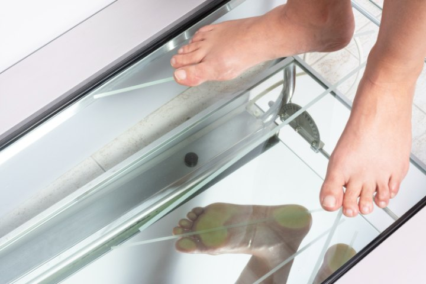

Exploración biomecánica y análisis de la pisada
El dolor rara vez aparece donde está el problema. Un exceso de presión en el antepié, un tobillo que gira más de lo debido o una pierna ligeramente más corta terminan doliendo en el talón, en la rodilla o en la espalda.
El estudio de la marcha nos permite ver cómo apoyas el pie de pie y en movimiento, medir el rango de las articulaciones y entender qué estructura está trabajando de más. Con esos datos explicamos el origen real de la molestia y decidimos el tratamiento: pautas de calzado, ejercicios o plantillas a medida.
Es una exploración indolora, que se realiza en una sola visita y de la que sales sabiendo qué le ocurre a tu pie.
Cuatro fases en una única visita
01
Dónde duele, desde cuándo, en qué momento del día y con qué actividad o calzado.
02
Movilidad articular, musculatura, alineación y valoración de la pierna completa.
03
Vemos el reparto de las presiones en apoyo y analizamos la pisada caminando.
04
Te explicamos el resultado y proponemos el tratamiento, con revisiones de control.
Dolor en el talón por sobrecarga de la fascia. Descarga de la zona, pautas de estiramiento y control del calzado.
Exceso de carga en la zona de los dedos, con durezas y sensación de caminar sobre una piedra.
Alteraciones del arco que modifican el apoyo. En el niño, seguimiento; en el adulto, compensación con soportes.
Deformidades que rozan con el calzado. Protegemos la zona y frenamos su progresión con ortesis.
Pide tu estudio de la marcha en el centro de Murcia.
968 23 19 64